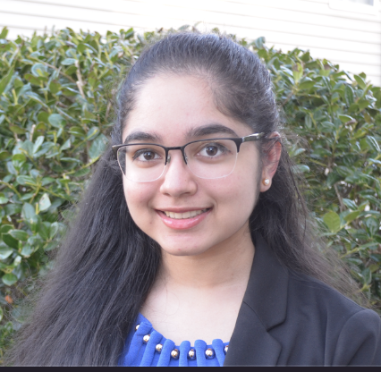

Aishwarya Balaji
I'm a CS & Econ student at UPenn (M&T)
Currently, exploring the realms of CV, DL, AP and Sustainability 🚀


I'm a CS & Econ student at UPenn (M&T)
Currently, exploring the realms of CV, DL, AP and Sustainability 🚀
Hosted Reciation, Office Hours, Midterm Review Sessions for Introduction Computer Architecture at the Unviversity of Pennsylvania
2023